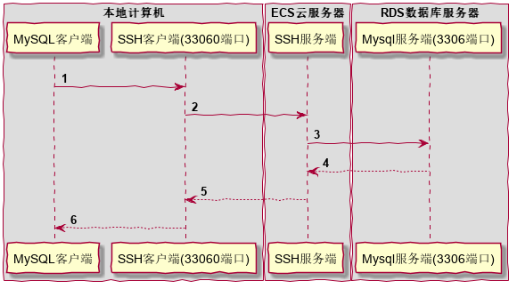

SSH 端口转发应用实例
Published on Jun 08, 2020
案例一：使用本地端口转发解决Mysql客户端不支持Google两步验证的问题
公司项目使用的阿里云服务，出于安全考虑，数据库服务器仅开放了内网访问权限。 要想使用本地 Mysql客户端 连接公司数据库的话，就需要使用 SSH隧道。 当然一般的 Mysql客户端 都是支持基本的 SSH隧道 连接的。 但是，同样出于安全考虑，公司的云服务器登录又使用了 google两步验证。 而我使用的 Mysql客户端 使用SSH隧道时，尚不支持 google两步验证。 这时候，使用SSH本地端口转发就可以很好的解决这个问题。
本地端口转发的命令格式如下：
ssh -L [<本地主机>:]<本地主机端口>:<远程主机>:<远程主机端口> <SSH登录主机>
在本地电脑上执行如下命令：
ssh -L 33060:RDS数据库服务器:3306 ECS云服务器
然后使用本地 Mysql 客户端只需要访问本地的33060端口即可。
实际的数据传输流程大致如下：

- 本机的Mysql客户端将数据发送到本机的33060端口上;
- 本机的SSH客户端将33060端口收到的数据加密并转发到ECS云服务器的SSH服务端;
- ECS云服务器的SSH服务端收到数据后解密并转发到RDS数据库服务器的3306端口;
- 最后再将RDS数据库服务器返回的数据原路返回到本机的Mysql客户端。